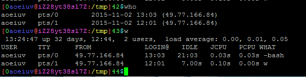
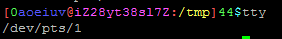
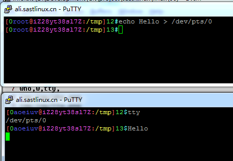
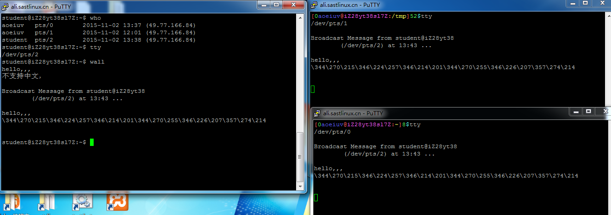
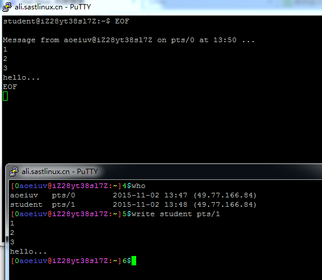
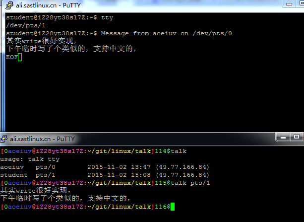
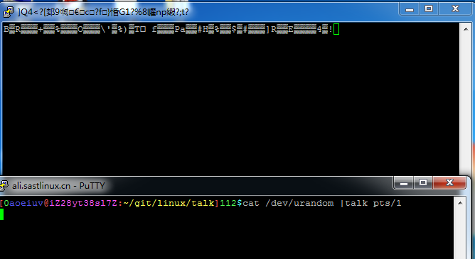

服务器聊天命令，到这里，我已经给大家都开了各自的账号，同时在登陆的话，可以互相聊天的，who,w,tty,这些用来确定身份，wall,write,mesg,这些用来聊天。
who,w,tty,


who和w命令是看别人的登陆信息，第一列是用户名，第二列是tty，tty命令是看自己的tty，tty简单说明一下，就是每个登陆，都有一个tty，键盘输入就是输入到这个tty，屏幕输出就是从这个tty读。

上图有重定向，后面会说，现在是要明白，把数据直接写入一个tty设备文件，就会在相应的用户的屏幕上看到输出，但是一般用户是没有权限直接写这些设备文件的，所以Linux提供两个命令用来聊天，可惜不支持中文，wall，警告，这个命令是用来向所有人广播消息，所有人都能收到，输入完成后用ctrl+d表示输入结束，然后就会广播出去了。

write，和一个指定的用户聊天。

和上面的wall不同的是，write是每行发送一次，也就是敲一下驾车就发送一次，一行没结束时也可以用ctrl-D清空缓冲也能发送出去。
mesg
mesg n，可以拒绝接收write消息，相应的mesg y，就能接收，默认就是接收。
其实write很好实现，下午临时写了个类似的，支持中文的。

但是支持中文不安全，因为能输中文也就能输乱码，可以给强行给别人输乱码，导致别人终端坏掉。
